HERITAGE SCIENCE AUSTRIA 2.0
LEGION
machine LEarninG-enabled Identification of archaeological Objects in the middle daNube river basin.
Decoding the history of Roman Carnuntum through automated classification of common ware pottery using cutting-edge Machine Learning.
EXPLORE PROJECTProject News
Soon
First Data Release
We are currently preparing the first batch of digitised archaeological drawings for public release.
30 June 2026
Excursion: LEGION @ Carnuntum
The LEGION project team went on a field trip to Roman City of Carnuntum and visited the Archaeological Central Depot at Kulturfabrik Hainburg. Guided by Christian Gugl, the team gained valuable insights into ancient urban structures and extensive artifact repositories. We would like to express our sincere gratitude for the generous support from the Lower Austrian State Collections (Landessammlungen NÖ), the Center for Museum Collections Management at the University for Continuing Education Krems (UWK), and Roman City of Carnuntum.
17 June 2026
Austria Joins E-RIHS
Austria has officially joined the European Research Infrastructure for Heritage Science (E-RIHS ERIC). Coordinated by the Austrian Archaeological Institute (OeAI/OeAW) through E-RIHS.at, this milestone strengthens international research cooperation and access to state-of-the-art facilities for cultural heritage preservation.
OeAI News (in German) →15 June 2026
AI Factory Austria AI:AT
A delegation from the Austrian Academy of Sciences (OeAW), including the LEGION project, visited the AI Factory Austria AI:AT in Vienna to explore collaboration opportunities. The visit focused on EuroHPC access, AI services, and research synergies with startups.
Full Report →22 May 2026
Workshop: Digital Frontiers
Dominik Hagmann presented "Reflections on AI Applications in Austrian Roman Archaeology" at the Digital Frontiers workshop, highlighting LEGION's Human-in-the-Loop approach, legacy data digitization, and the transparent, ethical use of Generative AI.
21 May 2026
LEGION @ RAC/TRAC 2026
Dominik Hagmann presented our latest research at the joint Roman Archaeology Conference & Theoretical Roman Archaeology Conference (RAC/TRAC 2026) at Aarhus University, Denmark.
Conference Info →11 May 2026
MLA2S Networking Seminar
Dominik Hagmann and Irene Ballester-Campos presented LEGION at the 9th Networking Seminar of the MLA2S platform, highlighting AI-enabled identification of archaeological objects from Carnuntum.
Event Details →7 April 2026
MAIA General Meeting
Dominik Hagmann hosted the Second General Meeting of the MAIA COST Action in Hainburg, focusing on managing AI in archaeological research through interdisciplinary collaboration.
Full Report →Fragmented Knowledge & Data Overload
The Manual Bottleneck
Traditional classification of everyday ceramics is too slow for massive, fragmented archaeological datasets. Huge amounts of data remain unassessed.
Untapped Data Points
Tens of thousands of technical 2D find drawings remain unclassified and unintegrated due to the sheer volume of material.
Some finds are more equal than other finds
Funding for mass finds is often restricted. Automated solutions are required to bridge this gap.
AI-Enabled Archaeology
LEGION introduces a Semi-supervised Computer Vision Pipeline leveraging thousands of historical documents for deep material insight.
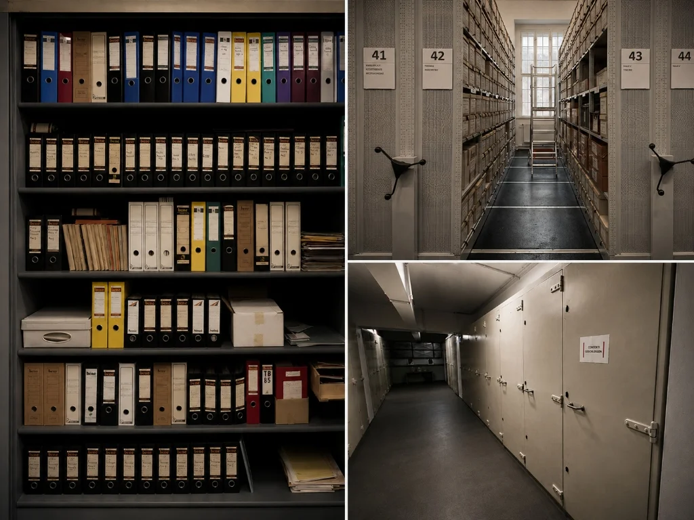
Hybrid Data Input
Processing over 70,000 2D drawings alongside their comprehensive archaeological metadata.
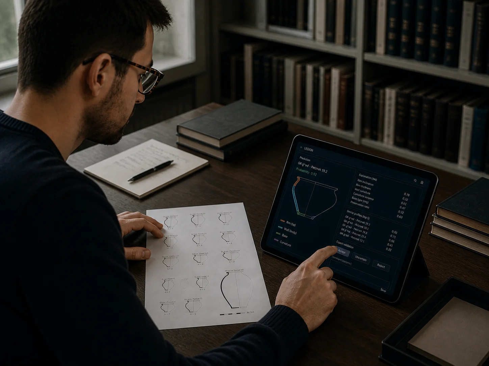
Human-in-the-Loop (HITL)
eXplainable AI (XAI) ensures results are validated by experts to remain archaeologically robust.
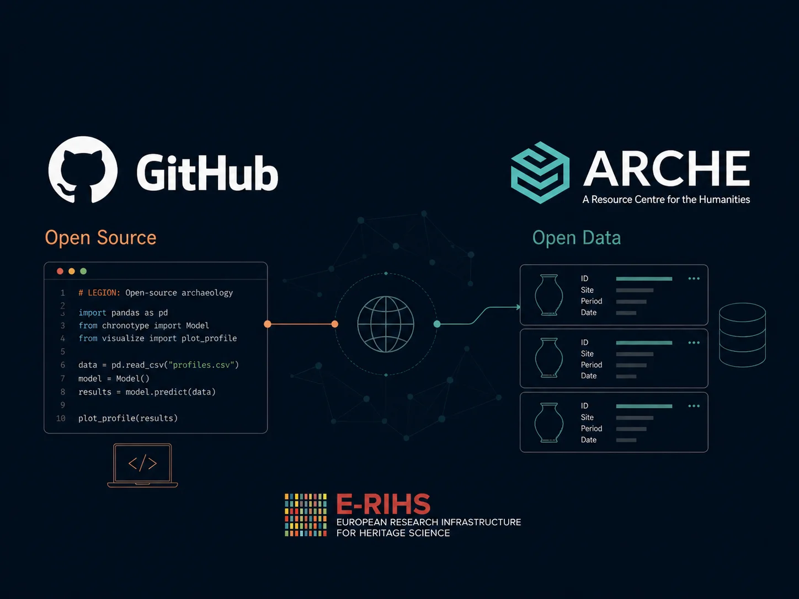
Open Source Integration
Fully open-source solutions hosted on GitHub, ensuring long-term accessibility and transparency for the global research community.
New Socio-Economic Insights & AI Tools
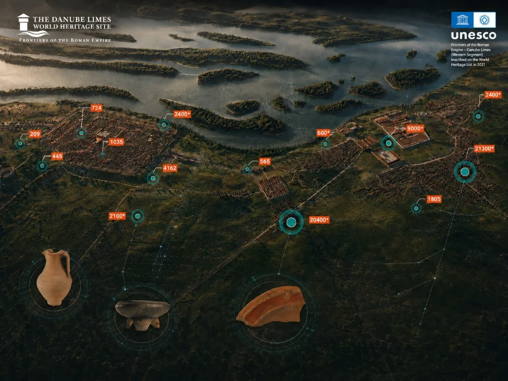
Local Production & Trade
Revealing complex patterns in local production and tracking trade trends across the entire Middle Danube River Basin.
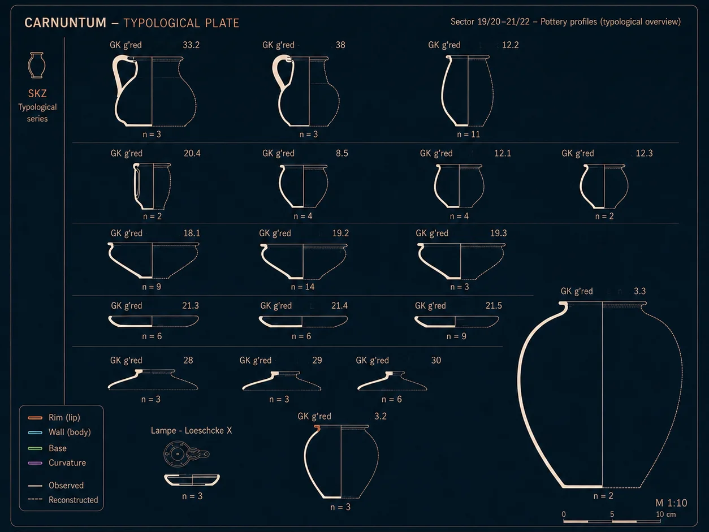
New Typochronology
Establishing a completely new, data-driven typochronology of Roman Common Ware based on large scale analysis.
Free & Open-Source Classification Tool
A user-friendly, open-source tool built for rapid, automated typochronological dating with >90% classification accuracy.
Open-Source Ecosystem & Repositories
LEGION is committed to Open Science, FAIR Data, and Reproducible AI. All developed machine learning pipelines, benchmark datasets, web platforms, and utilities are released under permissive open-source licenses for the global research community.
legion-hsa-2-0.github.io ↗
Interactive web platform and project portal featuring client-side 3D WebGL rendering, scroll-synced orbit camera controls, and digital heritage mapping.
legion-cv-pipeline ↗
Semi-supervised Computer Vision pipeline for rapid, automated classification and typochronological dating of Roman pottery drawings with eXplainable AI (XAI).
centuria-dataset ↗
Standardized archaeological open dataset containing over 70,000 digitized 2D technical ceramic drawings alongside structured contextual metadata.
legion-tools ↗
Specialized utilities for Human-in-the-Loop (HITL) annotation, drawing vectorization, image preprocessing, and export for cultural heritage archives.
Experts Behind LEGION
The LEGION project is a multi-disciplinary collaboration bridging the gap between archaeological expertise and advanced computational methods.
We are always looking for collaboration and feedback. Reach out to the project lead for inquiries regarding data, methodology, or partnership opportunities.
Leading Institutions
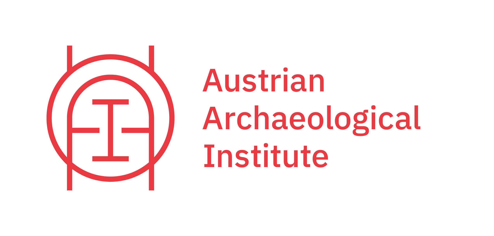
OeAI / OeAW
Austrian Archaeological Institute
CVL / TU WIEN
Computer Vision Lab
ACDH
Austrian Centre for Digital Humanities
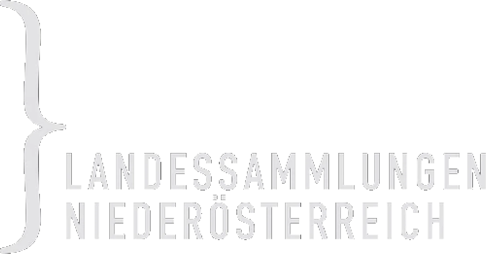
LSNÖ
Lower Austrian State Collections
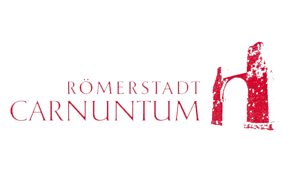
CARNUNTUM
Roman City Carnuntum
WIEN MUSEUM
Vienna Museum
UWK
University for Continuing Education Krems